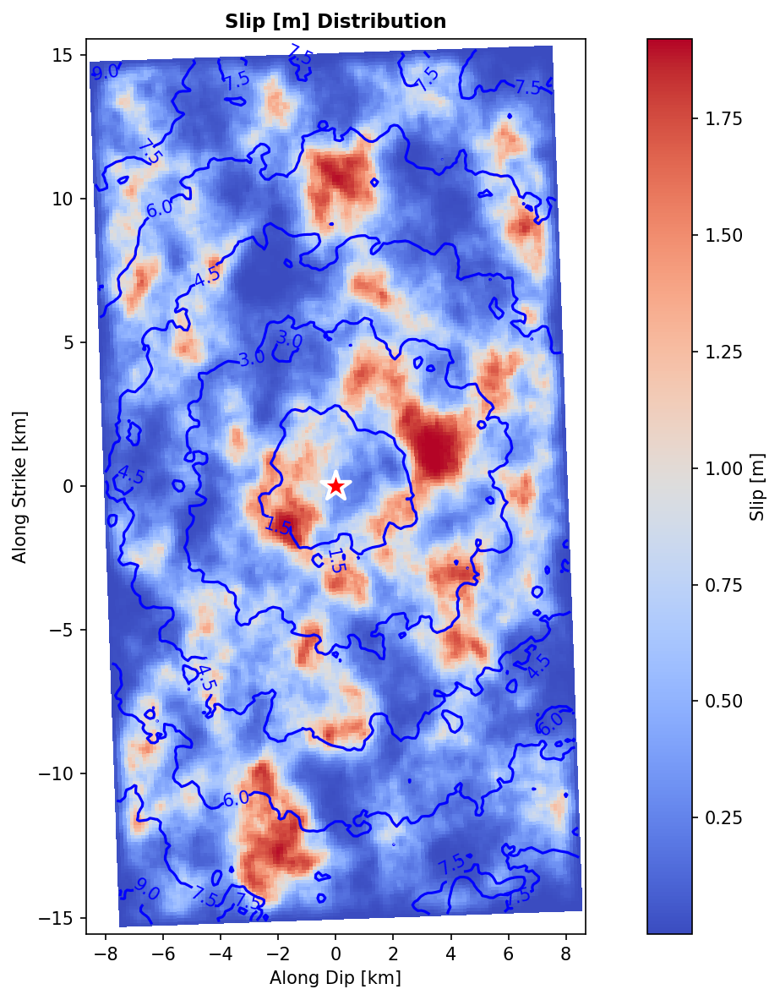

FFSP stochastic rupture¶
The Finite Fault Stochastic Process tool generates physically-admissible stochastic slip distributions on a fault plane, a deterministic skeleton plus random fields. See the background for the why.
Input: FFSPSource¶
from shakermaker.ffspsource import FFSPSource
source = FFSPSource(
id_sf_type=8, freq_min=0.01, freq_max=24.0,
fault_length=30.0, fault_width=16.0,
x_hypc=15.0, y_hypc=8.0, depth_hypc=10.0, xref_hypc=0.0, yref_hypc=0.0,
magnitude=6.5, fc_main_1=0.1, fc_main_2=0.3,
rv_avg=2.6, ratio_rise=0.2,
strike=358.0, dip=40.0, rake=113.0, pdip_max=5.0, prake_max=10.0,
nsubx=256, nsuby=128, nb_taper_trbl=[5, 5, 5, 5],
seeds=[1, 2, 3], id_ran1=1, id_ran2=50,
angle_north_to_x=0.0, is_moment=1,
crust_model=crust,
)
The constrained (deterministic) inputs¶
| Group | Args | Units | Meaning |
|---|---|---|---|
| Magnitude | magnitude |
\(M_w\) | target moment magnitude |
| Geometry | fault_length, fault_width |
km | fault dimensions \(L\times W\) |
| Orientation | strike, dip, rake |
deg | fault mechanism |
| Hypocentre | x_hypc, y_hypc, depth_hypc |
km | nucleation point |
| Reference | xref_hypc, yref_hypc |
km | hypocentre reference origin |
| Spectrum | fc_main_1, fc_main_2 |
Hz | low / high corner frequencies |
| Band | freq_min, freq_max |
Hz | synthesis frequency range |
| Kinematics | rv_avg, ratio_rise |
km/s, – | mean rupture velocity, rise-time ratio |
| Slip model | id_sf_type, is_moment |
– | slip-rate function type / result flag |
| Medium | crust_model |
– | a CrustModel |
The stochastic controls¶
| Group | Args | Meaning |
|---|---|---|
| Discretisation | nsubx, nsuby |
subfaults along strike / down dip |
| Tapers | nb_taper_trbl |
taper zones [top, right, bottom, left] |
| Perturbations | pdip_max, prake_max |
max dip / rake perturbation (deg) |
| Randomness | seeds, id_ran1, id_ran2 |
random seeds, realisation range [start, end] |
| Frame | angle_north_to_x |
rotation north→x (deg) |
| Output | output_name, verbose |
file prefix, progress flag |
Resolution rule: keep subfaults small versus the shortest wavelength,
dx, dy ≲ Vs_min / (5·fmax). Withnsubx=256on a 30 km fault,dx ≈ 0.12 km.
What the generator builds¶
Under the hood FFSP (Liu–Archuleta–Hartzell, with Ji's refinements) lays down eight coupled random fields on the fault plane, each with magnitude-scaled correlation lengths and prescribed cross-correlations to slip:
| Field | Controls |
|---|---|
| Slip \(D(\xi,\eta)\) | where and how much the fault moves, the asperities |
| Rise time \(\tau_r\) | how long each point keeps slipping |
| Peak time \(\tau_p\) | when slip-rate peaks |
| Rupture velocity \(v_r\) | how fast the front propagates (bounded, depth-dependent) |
| Rupture time \(t_0\) | front arrival, from the eikonal solution + perturbations |
| Dip / rake perturbations | local mechanism scatter (pdip_max, prake_max) |
| Slip-rate shape | the id_sf_type slip-rate function at each subfault |
Everything you pass in the constructor either fixes one of these (the
constrained inputs) or shapes its randomness (the stochastic controls). The
seeds make a realisation reproducible; id_ran1..id_ran2 is the range of
realisations to generate.
Scoring and selection¶
Each realisation gets a PDF score measuring how well it matches the
targets (mean rise time, rupture velocity, the double-corner-frequency
spectrum between fc_main_1 and fc_main_2). FFSP keeps either the single
best realisation (deterministic analysis) or the whole ensemble
(probabilistic), see the background.
A generated slip field (Mw 6.5, 64 × 32 subfaults), note the asperities:

Reproduce with gen_ffsp.py.
Result: run & inspect¶
source.run() # generate the realisations (MPI-aware)
source.get_subfaults() # best/active realisation data
source.set_active_realization(3) # pick a specific one
Export:
source.write_hdf5("results.h5") # FFSPSource.from_hdf5(...) to reload
source.write_ffsp_format("FFSP_OUTPUT") # legacy text format
Visualise (each is one call):
| Method | Shows |
|---|---|
plot_spacial_distribution(field='slip') |
slip / rise-time map on the fault |
plot_rupture_snapshot(t) |
rupture front at time t |
plot_histogram(field='slip') |
field distribution |
plot_quality_metrics() / plot_temporal_metrics() |
ensemble scoring |
plot_spectral_comparison() |
spectrum vs target |
plot_source_time_function() · plot_crust_layers() |
STF · crust |
create_animation(...) |
rupture movie |
From rupture to ground motion¶
An FFSPSource describes the rupture; to get ground motion you feed its
subfaults, each carrying its own location, mechanism, slip, rupture time, and
slip-rate function, into the FK engine as a FaultSource.
There is no built-in converter
FFSPSource does not provide a to_faultsource() method. After
run(), get_subfaults() (or get_realization(i)) returns a plain
dict of per-subfault NumPy arrays — you build the FaultSource
yourself, one PointSource per subfault. This is the honest, explicit
way to drive the FK engine from an FFSP realisation.
The dict holds these aligned arrays (one entry per subfault):
| Key | Meaning |
|---|---|
x, y, z |
subfault position (km) |
strike, dip, rake |
mechanism (deg) |
slip |
slip amplitude (m) |
rupture_time |
onset time → PointSource(..., tt=) |
rise_time, peak_time |
slip-rate shape → feed the STF |
Build the FaultSource by iterating the dict. Here each subfault gets an
SRF2 slip-rate pulse whose total duration is its rise_time, peak at
peak_time, and amplitude scaled by its slip:
from shakermaker.pointsource import PointSource
from shakermaker.faultsource import FaultSource
from shakermaker.stf_extensions.srf2 import SRF2
source.run() # 1. generate the ensemble
source.set_active_realization(0) # 2. pick the best/active realisation
sf = source.get_subfaults() # 3. dict of per-subfault arrays
dt = 0.01
sources = []
for i in range(len(sf["x"])):
Tr = float(sf["rise_time"][i]) # total rise time (s)
Tp = float(sf["peak_time"][i]) # time to peak (s)
stf = SRF2(Tr=Tr, Tp=Tp, Te=Tr - Tp, dt=dt,
slip=float(sf["slip"][i]), a=1.0, b=1.0)
ps = PointSource(
[float(sf["x"][i]), float(sf["y"][i]), float(sf["z"][i])],
[float(sf["strike"][i]), float(sf["dip"][i]), float(sf["rake"][i])],
stf=stf,
tt=float(sf["rupture_time"][i]), # rupture onset
)
sources.append(ps)
fault = FaultSource(sources, metadata={"name": "ffsp_realization_0"})
model = ShakerMaker(crust, fault, stations)
model.run_nearest(stage='all', h5_database_name='./ffsp_run/gf.h5',
dt=dt, nfft=4096, dk=0.1, writer=writer)
You can swap SRF2 for Brune (or Discrete) as the per-subfault slip-rate
function — any STF works, as long as you scale it by the subfault slip.
Because every realisation shares the same fault geometry and receiver layout, the FK Green's functions are common to the whole ensemble: compute them once (Stages 0–1) and re-run only Stage 2 per realisation. That is what makes a 50–500-member probabilistic study tractable, see the OP pipeline.